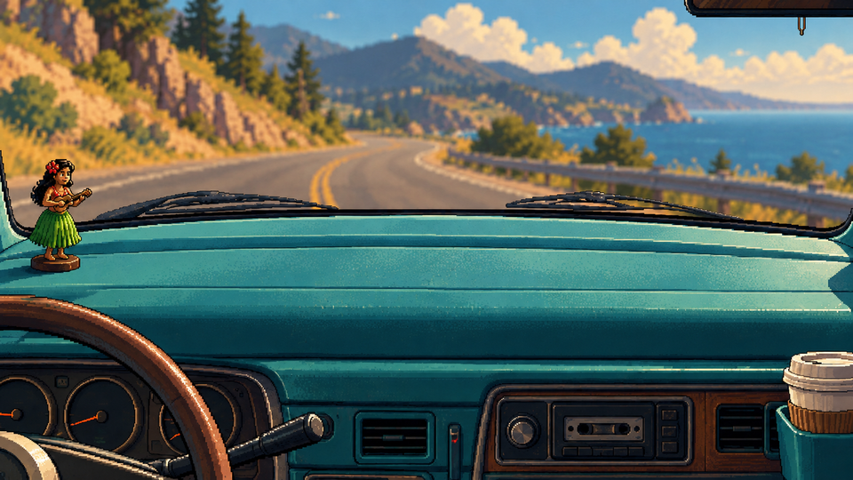

trip_map_dashboard

Brief
960 x 540, the map screen's backdrop, seen from the driver's seat, level (no tilt or perspective on the dash top, so the flat map drawn on it in code sits right). The bottom 120 px are the van's dashboard front: sun-faded teal vinyl, a cassette deck in the middle, two round gauges with plain dials (no numbers or marks), a paper coffee cup in a holder at the right. Above it, the dash top: a flat, empty strip of teal vinyl from x 30 to x 930 and y 190 to y 420, **with no map, paper or objects on it** (the game draws the map there). The only things on the dash top are at the far left (an empty round spot for the ornament, 48 x 64, drawn in code) and nothing at the right. The top 190 px are the windscreen: a soft-focus coastal road and hills, darker and less saturated so the map reads over it, the rear-view mirror's edge at the top right with an empty hook under it (the air freshener is drawn in code). No steering wheel in the map's area.